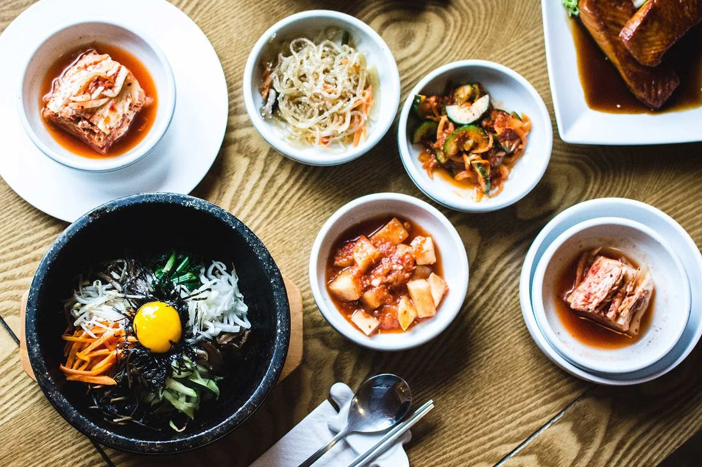

5 Must-Have Korean Pantry Staples Every Home Cook Should Stock from Kimchi Mart

Why Every Miami Home Cook Needs a Korean Pantry
The love for Korean food continues to grow in Miami homes. From spicy stews to flavorful stir-fries, Korean cuisine offers a rich balance of taste and nutrition. Building a Korean pantry at home allows cooks to easily recreate these authentic flavors using key staples that have been the foundation of Korean cooking for centuries.
Exploring local Asian stores can help you find the right ingredients, and the Chinese market in Florida is one great place to discover a wide variety of items that complement Korean cooking. Having these essentials ready ensures that every meal captures the depth and harmony of Korean flavors.
Kimchi Mart makes it simple for shoppers in Miami to find authentic Korean ingredients in one convenient location. The store’s well-curated selection features pantry staples that can transform everyday meals into traditional Korean dishes with minimal effort.
1. Gochujang (Korean Chili Paste)
What It Is and How It Adds Deep, Spicy-Sweet Flavor
Gochujang is a fermented chili paste made from Korean red pepper powder, rice, and soybeans. It offers a unique combination of heat, sweetness, and umami flavor. The paste has a thick texture and rich color, making it a versatile ingredient in a variety of dishes.
This paste forms the foundation for many Korean recipes. It adds depth and complexity to marinades, soups, and dipping sauces, elevating even simple ingredients. The balanced heat of gochujang enhances flavor without overpowering other components, making it an essential ingredient for any Korean pantry.
Common Uses: Bibimbap, Tteokbokki, Marinades
Gochujang is a staple in bibimbap sauce, where it adds a bold kick to rice and vegetables. It is also the key ingredient in tteokbokki, the popular spicy rice cake dish. Beyond these, gochujang serves as an excellent base for marinades, combining beautifully with garlic, soy sauce, and sesame oil to create flavorful coatings for meats and vegetables.
For those who love authentic spice, Miami shoppers can also explore where to find the best kimchi in Miami to pair with dishes made using gochujang.
2. Doenjang (Fermented Soybean Paste)
The Secret to Umami-Rich Korean Soups and Stews
Doenjang, another fermented paste, is the backbone of Korean comfort food. Made from soybeans and brine, it has a deep, earthy taste that enhances the umami character of soups, stews, and sauces. Its natural fermentation process makes it highly nutritious, providing beneficial enzymes and proteins.
This paste is considered the Korean equivalent of miso, though it has a more intense flavor. It blends easily with garlic, chili, and vegetables, making it perfect for hearty dishes.
Recipes: Doenjang Jjigae, Sauces, and Dips
Doenjang jjigae, a soybean paste stew, is one of the most popular Korean home-cooked meals. The paste can also be added to dipping sauces for grilled dishes or combined with sesame oil and chili paste for a spicy condiment. Its adaptability makes it a must-have in every Korean-inspired kitchen.
3. Korean Rice and Noodles
Rice and noodles are the cornerstone of Korean cuisine, serving as the base for countless dishes. These ingredients not only provide texture but also balance the bold flavors of side dishes and sauces.
Short-Grain Rice for Everyday Meals
Korean short-grain rice, also known as sticky rice, has a plump, soft texture that pairs perfectly with side dishes like kimchi and stir-fried vegetables. It is slightly sweet and sticky when cooked, making it ideal for shaping into rice balls or sushi-style rolls. A quality bag of Korean rice should always be part of your pantry staples.
Glass Noodles (Dangmyeon) and Ramyeon Favorites
Dangmyeon, made from sweet potato starch, is used in traditional dishes like japchae. These translucent noodles absorb flavors easily, giving dishes a satisfying chew. Ramyeon, or Korean instant noodles, is another essential item. It can be customized with gochujang, eggs, or vegetables for a quick, flavorful meal.
Miami residents can also visit the Korean market Pembroke Pines for a variety of authentic noodles, rice options, and imported brands that are trusted by Korean cooks.
4. Seaweed Snacks and Sheets
The Health Benefits of Seaweed
Seaweed is an important source of vitamins and minerals in the Korean diet. It is rich in iodine, calcium, and antioxidants, which contribute to better metabolism and overall health. Seaweed also provides a distinct flavor that enhances both traditional and modern dishes.
Fun Ways to Use It: Snacks, Kimbap, and Garnishes
Dried seaweed sheets can be used to make kimbap, the Korean version of sushi rolls, or as a garnish for rice and noodle dishes. Seaweed snacks are lightly seasoned and roasted, offering a crispy and savory treat. These snacks are perfect for quick bites or as side accompaniments during meals.
Including seaweed products in your pantry not only supports healthy eating but also adds authentic Korean texture and taste to everyday meals.
5. Essential Korean Condiments and Sauces
Soy Sauce, Sesame Oil, and Vinegar for Authentic Flavor
Every Korean kitchen depends on a few key condiments that enhance flavor balance. Soy sauce adds saltiness and depth to stir-fries and soups. Sesame oil contributes a nutty aroma that brings warmth and richness to dishes. Vinegar, often rice or apple vinegar, introduces the light acidity needed to balance bold flavors.
Recommended Brands Available at Kimchi Mart
Kimchi Mart Miami offers a wide selection of high-quality Korean condiments and sauces that help home cooks achieve authentic results. Shoppers can choose from trusted Korean brands known for maintaining traditional preparation standards. Using these condiments ensures consistency and flavor across a variety of recipes.
Where to Buy Korean Pantry Staples in Miami
Spotlight on Kimchi Mart Miami — Your One-Stop Korean Grocery
Kimchi Mart Miami is the go-to destination for authentic Korean ingredients. The store carries a wide range of pantry staples including gochujang, doenjang, rice, seaweed, and sauces. Its selection helps both new and experienced home cooks find everything needed to prepare authentic Korean meals.
In-Store vs. Online Availability and Promotions
Kimchi Mart provides flexibility for all shoppers. Customers can visit the physical store for in-person browsing or order online for delivery across Miami. Special promotions, seasonal items, and discounts make it even easier to stock up on Korean essentials.
For additional details or product information, visitors can always reach out through the contact page for guidance on their latest offerings.
Conclusion
Creating a Korean pantry at home allows Miami cooks to experience authentic Korean flavors with convenience and consistency. By stocking essentials like gochujang, doenjang, rice, noodles, seaweed, and condiments, any home chef can prepare flavorful dishes that capture the essence of Korean cuisine.
Kimchi Mart Miami provides an excellent resource for finding genuine Korean products, both in-store and online. Building your pantry with these authentic staples ensures that every dish you prepare reflects true Korean taste and tradition.
For more information about available products or guidance on what to buy, you can easily contact Kimchi Mart and start your journey toward mastering Korean cooking at home.
Frequently Asked Questions
-
What are the most essential Korean pantry staples to start with?
Begin with gochujang, doenjang, soy sauce, sesame oil, and short-grain rice. These staples cover the foundation for most Korean recipes.
-
How should I store Korean condiments and sauces?
Store opened sauces and pastes in airtight containers and refrigerate them to maintain freshness and flavor quality.
-
Can Korean ingredients be used in non-Korean dishes?
Yes, ingredients like gochujang or sesame oil blend well with other cuisines, adding a unique spicy and savory twist to fusion recipes.
-
Are Korean pantry items expensive compared to other Asian ingredients?
Prices vary depending on the brand, but many Korean staples are affordable and last long due to their concentrated flavors and versatility.
-
Where can I find authentic Korean products in South Florida?
You can find a wide selection of authentic products at Kimchi Mart Miami or other specialized stores in the area offering imported Korean goods.
< Older Post
Newer Post >
Shop these ingredients at Kimchi Mart
Six stores across South Florida — or order online and pick up in an hour.